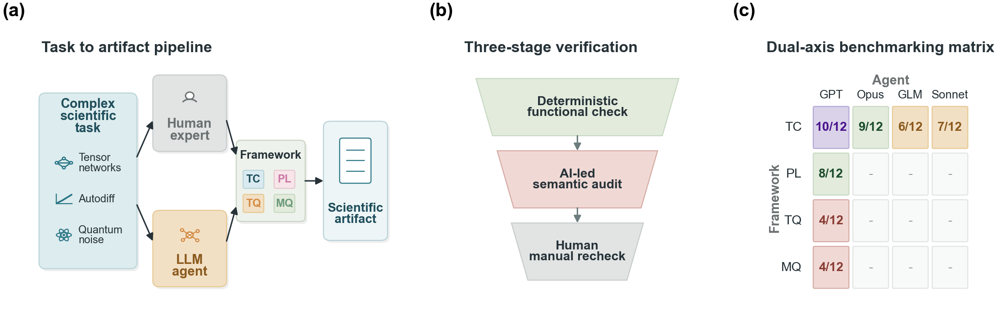
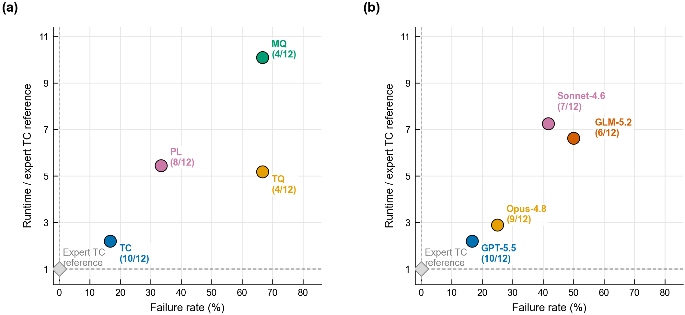
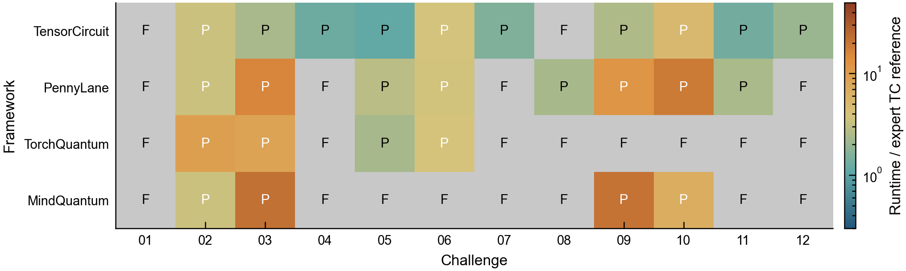
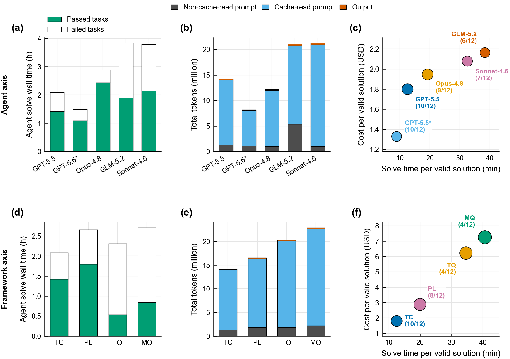

Dual-axis benchmarking of autonomous agents in scientific quantum programming
Scientific code generation demands physical model preservation, framework compliance, and runtime efficiency. ORBIT-Q evaluates LLM agents across orthogonal Framework and Agent axes using a compound validity check and artifact-level runtime measurement.
Computational science increasingly depends on software that encodes physical models, differentiable optimization pipelines, and performance-critical numerical representations. Autonomous coding agents now perform well on many conventional programming tasks, but scientific computing demands a rigorous validation paradigm that extends beyond simple functional test completion: generated code must preserve physical fidelity, differentiable workflows, framework-native semantics, and scalable representations.
We introduce Open Research Benchmark for Integrated Tasks in Quantum Computing (ORBIT-Q), a benchmark for agentic scientific programming using quantum computing as a rigorous and complex testbed of modern scientific workloads. ORBIT-Q combines functional tests, static policy checks, large-language-model-driven source-level semantic auditing, expert manual verification, and artifact-level runtime metrics to support two orthogonal comparisons: different agent harness and model configurations at a fixed quantum software framework, and different quantum software frameworks at a fixed agent.
Orthogonal views isolating framework capability/discoverability from the agent model configuration.
Integrates functional correctness, static policy limits, and GPT-5.5 semantic audits to prevent framework bypasses.
Goes beyond agent solve cost to measure the actual execution runtime of the generated scientific program.
Exhibits from the accompanying arXiv preprint

a, Complex scientific tasks are implemented by autonomous coding agents and expert developers, but both outputs must pass through an explicit framework constraint before becoming a scientific artifact.
b, The verifier applies a three-stage filter: deterministic functional evaluation, GPT-5.5-led semantic evaluation for framework bypasses and problem mismatches, and human manual recheck for ambiguous cases; artifact runtime and cost are logged after validity review.
c, The benchmark uses an orthogonal agent–framework matrix to separate agent-axis comparisons at fixed framework from framework-axis comparisons at fixed agent, with each grid cell measuring agent-framework co-performance.

a, Framework axis comparison under a fixed Codex agent using GPT-5.5. Each point shows the failure rate and geometric mean runtime relative to the expert TensorCircuit-NG reference on passed tasks. TC exhibits the highest success rate and the lowest slowdown.
b, Agent axis comparison on TC using the same coordinates. The GPT-5.5 point uses the Codex agent; Opus-4.8, GLM-5.2, and Sonnet-4.6 use the Claude Code agent. The grey diamond marks the expert reference baseline.
A clear gap remains between state-of-the-art agents and human experts, in both reliability and artifact runtime.

Task-by-framework map for the fixed-solver framework comparison (Codex with GPT-5.5 model). Color encodes solution runtime relative to the expert TC reference for passed tasks where a timed solution is available; failed tasks are marked F.
The map demonstrates that different frameworks fail on different physical workflows, reflecting the framework's native API expressiveness and automatic-differentiation stability.

a–c, Model-configuration comparison on TensorCircuit-NG. Agent solve wall time, total token use (uncached vs cached), and cumulative cost per valid solution vs solve wall time.
d–f, Framework comparison for a fixed Codex agent using GPT-5.5.
GPT-5.5* denotes GPT-5.5 with the TC-specific performance-checklist prompt, which shows a significant reduction in agent-side token consumption and cost without sacrificing valid task success count.
Based on manuscript evaluations (2026)
The framework axis holds the agent configuration fixed (Codex / GPT-5.5) and varies the required quantum software framework. This measures agent-framework co-performance: native primitive coverage, API discoverability, and compile/execution efficiency.
Key Finding (Artifact Efficiency): TensorCircuit-NG is not only the most successful framework (10/12 tasks solved), but also produces highly performant scientific code. Valid TensorCircuit-NG submissions achieve a geometric mean slowdown of only 2.2x compared to expert implementations, whereas other frameworks exhibit much larger slowdowns (e.g. 4.5x–10.1x geometric mean for PennyLane and MindQuantum). This highlights that TensorCircuit-NG provides much more efficient compilation and execution pathways for agent-synthesized code.
| Framework | Model | Passes | Failures | Agent Wall Time | Average Efficiency | Total Cost | Cost/Pass |
|---|
| Task | Pass? | Solution Runtime | Ref Runtime (TC) | Agent Solve Time | Agent Tokens | Agent Cost | Notes |
|---|
The agent axis holds the quantum framework fixed (TensorCircuit-NG) and varies the coding-agent harness and model configuration. This separates task completion ability from the computational quality of the generated scientific artifact.
| Agent / Model | Passes | Failures | Agent Wall Time | Average Efficiency | Total Cost | Cost/Pass |
|---|
| Task | Pass? | Solution Runtime | Ref Runtime (TC) | Agent Solve Time | Agent Tokens | Agent Cost | Notes |
|---|
Click on a task to explore the research workflow and target files
Select a task from the list to view the technical physics workflow and code repository links.
Reproduce ORBIT-Q evaluations locally inside the Harbor framework
If you use ORBIT-Q in your research, please cite the arXiv preprint:
@article{zhang2026orbitq,
title = {ORBIT-Q: Dual-axis benchmarking of autonomous agents in scientific quantum programming},
author = {Zhang, Shi-Xin and Chen, Yu-Qin},
journal = {arXiv:2607.03105},
year = {2026},
eprint = {2607.03105},
archivePrefix= {arXiv},
primaryClass = {quant-ph},
doi = {10.48550/arXiv.2607.03105},
url = {https://arxiv.org/abs/2607.03105}
}